5.2 API Tutorial of Alpha/Beta Rhythms
1. Background
In order to understand the workflow and initial parameter sets provided with this tutorial, we must first briefly describe prior studies that led to the creation of the data you will aim to simulate. This tutorial is based on results from (Jones et al., 2009) where, using MEG, we recorded spontaneous (pre-stimulus) alpha (7-14 Hz) and beta (15-29 Hz) rhythms that arise as part of the mu-complex from the primary somatosensory cortex (S1). See Figure 1 and also (Ziegler et al., 2010), (Sherman et al., 2016), and (Jones 2016).
![Figure 1 Left: Spectrogram of spontaneous activity from current dipole source in SI averaged across 100 trials from an example subject. The spectrogram shows nearly continuous prestimulus alpha and beta oscillations. At time zero, a brief tap was given to the contralateral finger tip, causing the spontaneous oscillations to briefly desynchronize. Right: A closer look at the prestimulus waveform and spectrogram from spontaneous activity during individual example signal trials. This illustrates that the alpha and beta oscillations occur intermittently and are frequently non-overlapping. All figures in Figure 1 are from (Jones et al., 2009) or related work.](https://raw.githubusercontent.com/jonescompneurolab/jones-website/master/images/textbook/content/06_alpha_beta/images/image03.png)
Our goal was to use our neocortical model to reproduce features of the waveform and spectrogram observed on single (un-averaged) trials (Figure 1, middle and right columns), where the alpha and beta components emerge briefly and intermittently in time. On any individual trial (i.e., 1 second of spontaneous, pre-stimulus data), the presence of alpha and beta activity is not time-locked and is representative of so-called "induced" activity. The alpha and beta bands of activity appear continuous when averaging the spectrograms across trials (Figure 1, left column), but this is due to the fact that the spectrograms values are strictly positive and the alpha and beta events accumulate without cancellation (Jones 2016). For individual trials, alpha and beta power is simultaneously high only around 50% of the time, as shown in Figure 2.
![Figure 2: Key features of the spontaneous non-average SI alpha/beta complex include: intermittent transient bouts of alpha/beta activity, a waveform that oscillates around 0 nAm, power spectral densities (PSD) with peaks in the alpha and beta bands, primarily non-overlapping alpha and beta events, and a symmetric waveform oscillation. The model was able to reproduce each of these features. The subplots in the top row are from experimental MEG data exhibiting these features, while the corresponding subplots in the bottom row are from simulations of the model. See (Jones et al., 2009).](https://raw.githubusercontent.com/jonescompneurolab/jones-website/master/images/textbook/content/06_alpha_beta/images/old-image29.png)
We found that a sequence of exogenous subthreshold excitatory synaptic drive could activate the network in a manner that reproduced important features of the SI rhythms in the model (Figure 2). This drive consisted of two nearly-synchronous 10 Hz rhythmic drives that contacted the network through proximal and distal projection pathways (Figure 3). The drives were simulated as population "bursts" of action potentials that contacted the network every 100ms with the mean delay between the proximal and distal burst of 0ms. Specifically, as shown schematically in (Figure 3), these 10 population bursts consisted of 2-spike bursts (i.e. spike "doublets"), Gaussian distributed in time. We presumed that during such spontaneous activity, these drives may be provided by leminscial and non-lemniscal thalamic nuclei, which contact proximal and distal pyramidal neurons respectively, and they are know to burst fire at ~10 Hz frequencies in spontaneous states ((Jones 2001), (Hughes and Crunelli, 2005)).

We assumed that the macroscale rhythms generating the observed alpha and beta activity arose from subthreshold current flow in a large population of neurons, as opposed to being generated by local spiking interaction (Zhu et al., 2009). As such, the effective strengths of the exogenous driving inputs were tuned so that the cells in the network remained subthreshold (all other parameters were tuned and fixed based on the morphology, physiology, and connectivity within layered neocortical circuits, see (Jones et al., 2009) for details). The inputs drove subthreshold currents up (proximal) and down (distal) the pyramidal neurons in order to reproduce accurate waveform and spectrogram features (see Figure 3). A scaling factor of 3000 was multiplied by the model waveform to reproduce a signal in units of nAm, comparable to the recorded data, suggesting that on the order of 200 x 3000 = 600,000 pyramidal neurons contributed to this signal.
We further found that increasing the strength and synchrony of the distal drive created stronger beta activity, but increasing the delay between the drives to ~50ms created a pure alpha oscillation (see Section 7 below). The former result led to the novel prediction that brief beta events emerge when a broad proximal drive is disrupted by a simultaneous strong distal drive lasting 50ms (i.e., one beta period). Support for this prediction was found invasively with laminar recordings in mice and monkeys (Sherman et al., 2016).
In this tutorial, we will explore parameter changes that illustrate these results. We will walk you step-by-step through simulations with various combinations of rhythmic proximal and distal drives to describe how each contributes to the alpha and beta components of the SI alpha/beta complex. We will not be simulating evoked responses or how alpha/beta oscillations interact with evoked responses; click here for our GUI tutorial on simulating evoked-response potentials (ERPs).
We will begin by simulating only rhythmic proximal 10 Hz inputs (Section 4), followed by simulating only distal 10 Hz inputs (Section 5), followed by various combinations of proximal and distal drives to generate combinations of alpha and beta rhythms (Section 6). We’ll show you how HNN can plot waveforms, time-frequency spectrograms, and power spectral density plots of the simulated data.
2. Setup and Downloading HNN Parameter Set Files
Before we do anything else let's import the python libraries we need:
from pathlib import Path
from urllib.request import urlretrieve
import numpy as np
import matplotlib.pyplot as plt
from hnn_core import read_network_configuration, simulate_dipole
from hnn_core.network import pick_connection
from hnn_core.viz import (
plot_dipole,
plot_tfr_morlet,
plot_spikes_hist,
plot_spikes_raster,
)
Throughout this tutorial, we will be using several different HNN parameter set files. These files are not included in the HNN installation, but instead must be downloaded separately. These four files are located at https://github.com/jonescompneurolab/hnn-data/tree/main/workshops/2025-04-09-HNN-online_workshop/gamma_gui_walkthrough.
# If you have already downloaded the alpha/beta network files
# to your own directory, then please change this path to
# point to where you downloaded the files, and you can skip
# the next code cell.
local_alpha_network_files_directory = Path.cwd() / "alpha_network_files"
# Only run this if you have NOT already downloaded the alpha/beta
# network files, since it will save a copy of the files
Path.mkdir(local_alpha_network_files_directory, exist_ok=True)
data_directory_url = "https://raw.githubusercontent.com/jonescompneurolab/hnn-data/main/workshops/2025-04-09-HNN-online_workshop/alpha_beta_gui_walkthrough/"
files_to_download = [
"OnlyRhythmicProx.json",
"OnlyRhythmicDist.json",
"AlphaAndBeta.json",
"AlphaAndBetaJitter50.json",
]
for file_name in files_to_download:
urlretrieve(
data_directory_url + file_name,
local_alpha_network_files_directory / file_name,
)
3. Setting Initial Simulation and Visualization Parameters
In the GUI, Section 3 has us change several default parameters before running any simulations. How we specify these using the API is different:
tstop (ms)=700– in the API this is simply thetstopargument we pass tosimulate_dipole()below. We need to increase this from the GUI default of170in order to see more alpha cycles.- Dipole smoothing is left off. In the GUI, you must change
Dipole Smoothingfrom30to0so that higher-frequency content like alpha/beta can be detected and analyzed correctly. In the API, no smoothing is applied unless you explicitly call Dipole.smooth(), so there is nothing to change. scaling_factoris3000, which is the same dipole scaling the GUI applies by default.Min Spectral Frequency (Hz)=5andMax Spectral Frequency (Hz)=40– in the API this is thefreqsarray we pass toplot_tfr_morlet().- Using multiple cores greatly increases simulation speed, equivalent to the Cores textbox in the GUI. Below, we detect whether MPI is available and, if so, use one process per physical core minus one.
# --- Settings shared by every simulation in this notebook ---
tstop = 700.0 # ms; simulation duration
tmin = 0.0 # ms; start time used for plots and spectral
# analysis. Raise this (e.g. to 50.0) to omit the
# initial transient of a simulation.
trial_idx = 0 # index of the single trial run in each simulation
scaling_factor = 3000 # same dipole scaling the GUI applies by default
freqs = np.arange(5., 40., 1.) # frequency range (Hz) for spectrogram plots
# Colors matching the GUI convention: proximal drive ("bursty1") in red,
# distal drive ("bursty2") in green.
drive_colors = {'bursty1': 'r', 'bursty2': 'g'}
# --- Parallel backend ---
# MPI gives the largest speed-up, but requires both `mpi4py` and an MPI
# installation. If either is missing, we fall back to Joblib, which
# parallelizes across trials only, and therefore does not speed up the
# single-trial simulations we run below.
try:
import mpi4py # noqa: F401
import psutil
n_procs = psutil.cpu_count(logical=False) - 1
use_mpi = True
print('Using MPIBackend with %d processes' % n_procs)
from hnn_core.parallel_backends import MPIBackend
except ImportError:
n_procs = 1
use_mpi = False
print('MPI is not available; using JoblibBackend instead')
from hnn_core.parallel_backends import JoblibBackend
4. Simulating Rhythmic Proximal Inputs: Alpha Only
4.1 Define and view our proximal input drive
As described in Section 1. Background, low-frequency alpha and beta
rhythms can be simulated by a combination of rhythmic subthreshold
proximal and distal ~10Hz inputs. Here, we begin by describing the
impact of only proximal inputs by simulating a network
that will only have a proximal drive. An initial
parameter set that will simulate the effect of ~10 Hz subthreshold
proximal drive is provided in the file
OnlyRhythmicProx.json.
In the GUI, the network structure and the external drives are loaded
separately, in the Network and External drives
tabs respectively. With the API, we only need a single call to
read_network_configuration() to load both at once.
We can easily inspect all connections of the network by printing the Network attribute for connectivity. This will give us information similar to the GUI list of each connection/drive.
# Load the first alpha network parameter file.
net = read_network_configuration(
local_alpha_network_files_directory / 'OnlyRhythmicProx.json'
)
# Print the network connectivity to console
net.connectivity
We can also see all of the drives easily by printing the corresponding Network attribute.
Rhythmic proximal input occurs through stochastic, presynaptic bursts
of action potentials from a population of bursting cells onto
postsynaptic neurons of the modelled network (see Figure 3). The spike
train start time for each bursting cell is sampled from a normal
distribution with controllable mean start time tstart and
standard deviation tstart_std. The inter-burst intervals,
or time between bursts, for each bursting cell are sampled from a normal
distribution of mean
(e.g., a burst_rate of 10 Hz corresponds to an inter-burst
interval of 0.1 second or 100 ms, different from an inter-spike
interval) and standard deviation burst_std (see Figure 3).
We can control the number of spikes per burst unit
(numspikes) and the final stop time for the entire
population of rhythmic proximal inputs as well (tstop).
net.external_drives
4.2 Run the simulation and visualize the net current dipole
Now that we have set our simulation parameters and loaded both our network configuration and external drive, we are ready to run our first simulation. Let's first define a small run_simulation() helper here, since every simulation in this notebook is run and scaled in exactly the same way.
def run_simulation(net, tstop=tstop):
"""Run a simulation (single trial) and return its scaled aggregate dipole.
This is the API equivalent of clicking `Run` in the GUI's `Simulation`
tab. Note that, unlike the GUI, there is no need to give each
simulation a unique name: we simply assign each result to its own
Python variable.
"""
backend = MPIBackend(n_procs=n_procs) if use_mpi else JoblibBackend(n_jobs=1)
with backend:
# Since we are only running a single trial here, we can
# just return the first trial's dipole, which is at index 0 (`trial_idx`).
dpl = simulate_dipole(net, tstop=tstop, n_trials=1)[trial_idx]
return dpl.scale(scaling_factor)
Now we will run and plot the actual simulation.
Concerning stochasticity: As shown in the red histogram, with this
parameter set, a burst of proximal input spikes is provided to the
network at a rate of ~10 Hz (i.e., every 100 ms). Due to the stochastic
nature of the inputs, there is some variability in the histogram of
proximal input times, and the exact histogram pattern may look different
on your simulation. Note that a decrease in the burst_std
would create shorter duration bursts (i.e., more synchronous bursts);
this will be explored further in Section 6.2 below.
The main point with this simulation is that ~10 Hz bursts of proximal drive induce current flow up the pyramidal neuron dendrites. This upward current flow increases the dipole signal above the 0 nAm baseline (making it positive), before the dipole relaxes back to zero approximately every 100 ms. This is observed in the blue current dipole waveform in bottom panel. See Figure 3 for illustration of the relationship between proximal drive input and the flow of current.
# -----------------------------------------------------------------------
# Run the first simulation and visualize the external input and dipole
# -----------------------------------------------------------------------
dpl = run_simulation(net)
fig, axes = plt.subplots(2, 1, sharex=True, figsize=(6, 6), constrained_layout=True)
# Top panel: external drive spike-time histogram (the single 'bursty1' drive)
net.cell_response.plot_spikes_hist(ax=axes[0], spike_types=['bursty1'], show=False)
# Bottom panel: aggregate dipole waveform
plot_dipole(dpl, ax=axes[1], layer='agg', show=False)
plt.show()
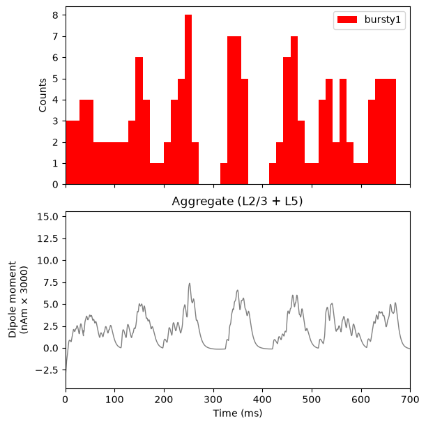
Next, let's show the spectrogram.
The bottom panel shows the corresponding time-frequency spectrogram for this waveform, which exhibits a high-power continuous 10 Hz signal.
Importantly, in this example, the strength of the proximal input spikes were titrated to be subthreshold. In other words, our simulated cortical cells do not spike in this instance. This is because we assume that macroscale oscillations are generated primarily by subthreshold current flow across large populations of synchronous pyramidal neurons (see Section 1. Background above for details). We will illustrate the relationship between spiking and the signal later, in Section 6.3 (see also our ERP tutorial).
This exploration with a proximal drive is only useful in understanding how subthreshold rhythmic inputs impact the current dipole produced by the circuit. However, several features of the waveform and spectrogram of the signal do not match the recorded data shown in Figure 1 and Figure 2. Next, we explore the impact of rhythmic distal inputs only (Section 5), and then a combination of the two (Section 6).
# -----------------------------------------------------------------------
# Reproduce the GUI's `Dipole-Spectrogram (2x1)` visualization template:
# the raw dipole waveform on top, and a Morlet time-frequency
# representation below.
# -----------------------------------------------------------------------
fig, axes = plt.subplots(2, 1, sharex=True, figsize=(6, 6), constrained_layout=True)
dpl.plot(tmin=tmin, ax=axes[0], layer='agg', show=False)
axes[0].set_title('Aggregate (L2/3 + L5)')
dpl.plot_tfr_morlet(
freqs,
n_cycles=freqs / 2.0,
tmin=tmin,
layer='agg',
ax=axes[1],
show=False,
colormap='viridis'
)
plt.show()
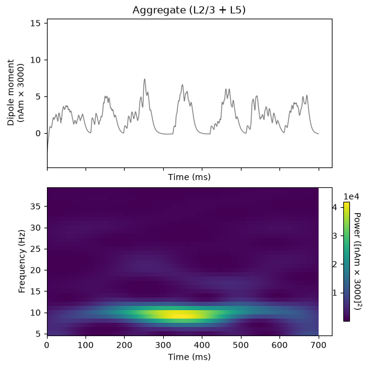
Packaging the GUI's figures as reusable functions
Rather than repeat all of the visualization code for each simulation, let's package each GUI figure into a function. Each function below is the API equivalent of one GUI visualization template.
LAYER_LABELS = [('L2', 'Layer 2/3'), ('L5', 'Layer 5'), ('agg', 'Aggregate')]
def _drive_names(net):
"""Names of the spiking drives of a network, if it has any.
Some networks below are driven only by a tonic applied current, and
therefore have no spiking drive to make a histogram of.
"""
return list(net.external_drives.keys())
def _distal_drive_names(net, drive_names):
"""Names of the given drives whose target location is 'distal'.
Distal drives push current up the dendrites rather than down, so we
invert their histogram bars to visually distinguish them from
proximal/somatic drives.
"""
return [name for name in drive_names
if net.external_drives[name]['location'] == 'distal']
def plot_drive_and_dipole(net, dpl, sim_name, tmin=tmin, tmax=None):
"""Drive histogram + dipole: the GUI's `Simulation` tab output."""
drive_names = _drive_names(net)
if len(drive_names) == 0:
fig, ax = plt.subplots(1, 1, figsize=(6, 3.5), constrained_layout=True)
axes = [ax]
else:
fig, axes = plt.subplots(2, 1, sharex=True, figsize=(6, 6),
constrained_layout=True)
net.cell_response.plot_spikes_hist(
ax=axes[0],
spike_types=drive_names,
invert_spike_types=_distal_drive_names(net, drive_names),
color=drive_colors,
show=False)
dpl.plot(tmin=tmin, tmax=tmax, layer='agg', ax=axes[-1], show=False)
fig.suptitle(sim_name)
plt.show()
def plot_dipole_and_spectrogram(dpl, sim_name, tmin=tmin, tmax=None,
freqs=freqs):
"""The GUI's `Dipole-Spectrogram (2x1)` visualization template.
`freqs` is the frequency range of the spectrogram, equivalent to
the GUI's `Min/Max Spectral Frequency (Hz)` settings.
"""
fig, axes = plt.subplots(2, 1, sharex=True, figsize=(6, 6),
constrained_layout=True)
dpl.plot(tmin=tmin, tmax=tmax, layer='agg', ax=axes[0], show=False)
axes[0].set_title('Aggregate (L2/3 + L5)')
dpl.plot_tfr_morlet(freqs, n_cycles=freqs / 2.0, tmin=tmin, tmax=tmax,
layer='agg', ax=axes[1], show=False, colormap='viridis')
fig.suptitle(sim_name)
plt.show()
def plot_drive_and_spikes(net, sim_name):
"""The GUI's `Drive-Spikes (2x1)` visualization template."""
drive_names = _drive_names(net)
if len(drive_names) == 0:
fig, ax = plt.subplots(1, 1, figsize=(6, 3.5), constrained_layout=True)
axes = [ax]
else:
fig, axes = plt.subplots(2, 1, sharex=True, figsize=(6, 6),
constrained_layout=True)
net.cell_response.plot_spikes_hist(
ax=axes[0],
spike_types=drive_names,
invert_spike_types=_distal_drive_names(net, drive_names),
color=drive_colors,
show=False)
net.cell_response.plot_spikes_raster(trial_idx=trial_idx, ax=axes[-1],
show=False)
fig.suptitle(sim_name)
plt.show()
def plot_psd_by_layer(dpl, sim_name, tmin=tmin, tmax=None, fmin=10., fmax=100.):
"""The GUI's `PSD Layers (3x1)` visualization template."""
fig, axes = plt.subplots(3, 1, figsize=(6, 8), constrained_layout=True)
for ax, (layer, layer_label) in zip(axes, LAYER_LABELS):
dpl.plot_psd(fmin=fmin, fmax=fmax, tmin=tmin, tmax=tmax, layer=layer,
label='%s (%s)' % (sim_name, layer_label), ax=ax,
show=False)
ax.legend()
fig.suptitle(sim_name)
plt.show()
5. Simulating Rhythmic Distal Inputs: Alpha Only
5.1 Define and view our distal input drive
Similar to 4.1, let's next look at the impact of having only
distal inputs in our network. Let's load
OnlyRhythmicDist.json, a network that will simulate the
effect of ~10 Hz subthreshold distal drive
only. Let's use
read_network_configuration() again and inspect the
drive.
# Load the first alpha network parameter file.
net_distal_only = read_network_configuration(
local_alpha_network_files_directory / 'OnlyRhythmicDist.json'
)
# Print the drive to console
net_distal_only.external_drives
We now run the simulation and visualize the drive, dipole, and spectrogram together (c.f. GUI Figures 10 and 11).
Again, the time-frequency spectrogram exhibits a high power continuous 10 Hz signal. Importantly, in this example, the strength of the distal input was also titrated to be subthreshold (i.e., cells do not spike). Again, we will illustrate the relationship between spiking and the signal later, in Section 6.3 (see also our ERP tutorial).
While instructional, this simulation also does not produce waveform and spectral features that match the experimental data in Figure 1 and Figure 2. In the next section (Section 6), we describe how combining both the 10 Hz proximal and distal drives can produce an oscillation with many characteristic features of the spontaneous SI signal (Jones et al. 2009).
dpl_distal_only = run_simulation(net_distal_only)
plot_drive_and_dipole(net_distal_only, dpl_distal_only, 'alpha_distal_only')
plot_dipole_and_spectrogram(dpl_distal_only, 'alpha_distal_only')
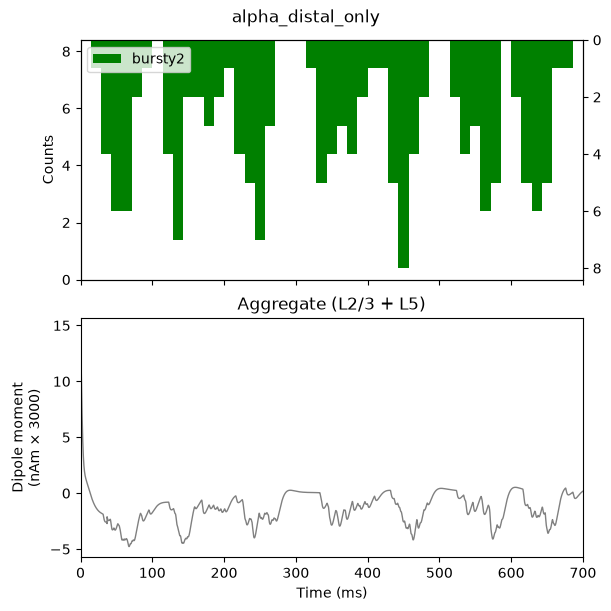
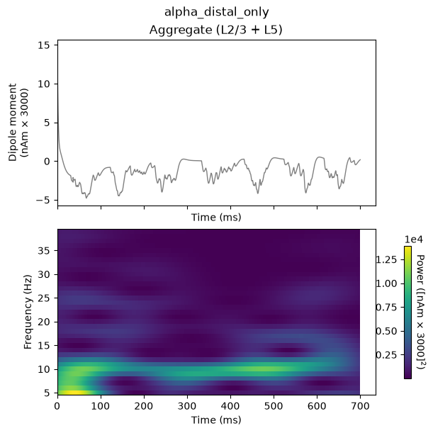
6. Simulating Combined Rhythmic Proximal and Distal Inputs:Alpha/Beta Complex
6.1 Define and view network drives
This is the API equivalent of loading AlphaAndBeta.json.
All drive parameters are the same as in Sections 4 and 5 above (except
for the random event_seeds), but now both
the proximal (bursty1) and distal (bursty2)
drives are added to the same network, both starting at
tstart=50 ms so that they arrive nearly synchronously to
the network on each ~10 Hz cycle.
net_alpha_and_beta = read_network_configuration(
local_alpha_network_files_directory / 'AlphaAndBeta.json'
)
# Print both the proximal and distal external drives to console
net_alpha_and_beta.external_drives
6.2 Run the simulation and visualize the net current dipole
As before, let's run and plot the combined simulation:
dpl_alpha_and_beta = run_simulation(net_alpha_and_beta)
plot_drive_and_dipole(net_alpha_and_beta, dpl_alpha_and_beta, 'alpha_and_beta')
plot_dipole_and_spectrogram(dpl_alpha_and_beta, 'alpha_and_beta')
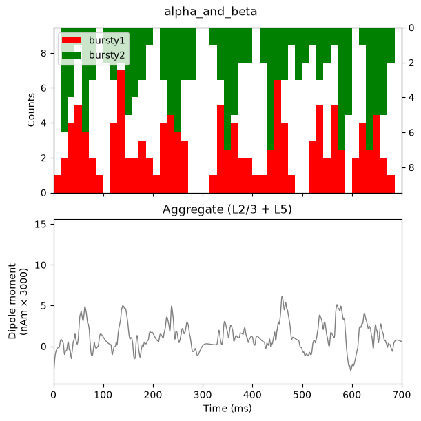
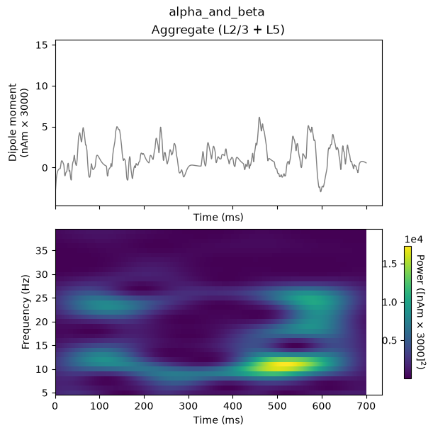
As shown in the green and red histogram, with this parameter set, bursts of both proximal and distal input spikes are provided to the network ~10 Hz (i.e., every 100 ms). Due to the stochastic nature of the inputs, there is some variability in the timing and duration of the input bursts: sometimes they arrive at the same time, and sometimes there is a slight offset between them. As a result, intermittent, transient alpha and beta events emerge in the time-frequency spectrogram.
Alpha events are produced when the inputs occur slightly out of phase and current flow is pushed alternately up and down the dendrites for ~50 ms duration each; the current flow of either burst input type does not interfere with the other. Beta events, in contrast, occur when the burst inputs arrive more synchronously; this causes upward current flow to be disrupted by downward current flow for ~50 ms, effectively cutting the oscillation period in half. Therefore, the relative expression of alpha versus beta can be controlled by the relative delay between the inputs and their relative burst strengths.
The current dipole signal of this simulation, shown in the above figure, oscillates above and below 0 nAm, which qualitatively matches the experimental data (see Figure 1 and Figure 2 in Section 1. Background). This is different than the proximal- or distal-only simulations in prior sections, since the current in the pyramidal neurons is pushed both upward and downward in this simulation. Additionally, this simulation reproduces the transient nature of the alpha and beta activity and several other features of the waveform and spectrogram can be quantified to show close agreement between model and experimental results (see Figure 2 above, and (Jones et al. 2009) for further details).
We note that here, we do not directly compare the spontaneous current dipole waveform to recorded data, as is done in the ERP tutorial with a root mean squared error. This is due to the fact that the spontaneous SI signal we are simulating is not time-locked to alpha or beta events on any given trial, and the stochastic nature of the driving inputs causes variability in the timing of the alpha or beta activity, making it difficult to align recorded data and simulated results.
6.3 Viewing network spiking activity
Importantly, in all the simulations of this tutorial so far, the strength of the proximal and distal inputs were titrated to be subthreshold, meaning that they do not cause our simulated cortical cells to spike. This is based on our assumption that macroscale oscillations are generated primarily by subthreshold current flow across large populations of synchronous pyramidal neurons (see Section 1. Background for references). We can verify the subthreshold nature of the inputs by viewing the spiking activity in the network:
plot_drive_and_spikes(net_alpha_and_beta, 'alpha_and_beta')
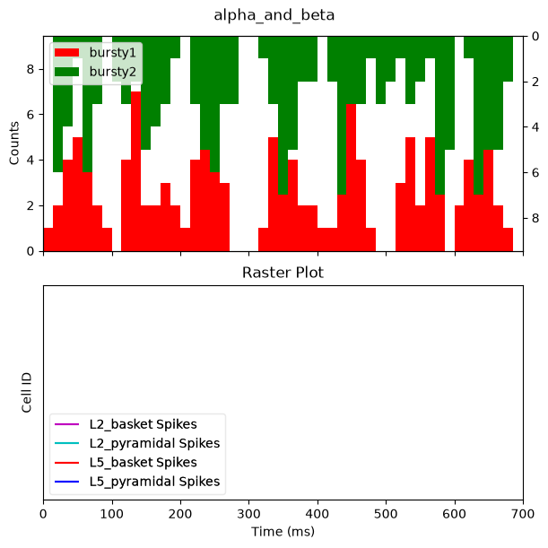
As in the GUI, the bottom panel is empty: there is no spiking produced by any cell in the network. The alpha and beta events above are indeed produced through purely subthreshold processes.
6.4 Simulating and averaging multiple trials with jittered start times
As described in Section 1. Background above, our simulation goal was to study the mechanisms that reproduce features of spontaneous alpha and beta rhythms observed in un-averaged data. These features include the fact that alpha and beta components are transient and intermittent (Figure 1, right panel). Each tutorial section up to this point was based on simulating un-averaged data.
Here, we will show that, depending on the stochastic nature of the proximal and distal rhythmic inputs, alpha and beta activity on different simulation “trial” may be jittered, creating the impression of continuous oscillations. We will describe how to run and average multiple simulation “trials” (700 ms epochs of spontaneous activity), and change the stochasticity by changing the standard deviation of the start times of the drives. This is akin to simulating induced rhythms rather than time-locked evoked rhythms. In the averaged spectrogram across trials, the alpha and beta events will accumulate without cancellation (due to the fact that spectrogram values are purely positive), creating the impression of a continuous oscillation, such as in Figure 1.
For this simulation, we will load
AlphaAndBetaJitter50.json, and the only difference in the
parameters from that of the prior AlphaAndBeta.json
simulation is that the start time for both drives has been increased
from 0 to 50 ms, and that we will be doing multiple trials. Both drives
will still input at a 10 Hz rate, but the distal versus proximal inputs
are less likely to occur at the same time.
Note that if you do not have MPI installed, you may wish to decrease the number of trials, since this will take some time to run multiple simulations.
net_alpha_and_beta_jitter = read_network_configuration(
local_alpha_network_files_directory / 'AlphaAndBetaJitter50.json'
)
# Print both the proximal and distal external drives to console
net_alpha_and_beta_jitter.external_drives
# This is a computationally expensive simulation of 10 trials. If you are
# not using the MPIBackend or have a slow computer, you may want to
# reduce the number of trials to 2 or 3 for testing purposes.
jitter_50_n_trials = 10
# For this case, because we want to handle multiple trials, we can't use our simple reusable functions above.
backend = MPIBackend(n_procs=n_procs) if use_mpi else JoblibBackend(n_jobs=1)
with backend:
dpls_jitter = simulate_dipole(net_alpha_and_beta_jitter, tstop=tstop, n_trials=jitter_50_n_trials)
# Scale every dipole
for idx, dpl in enumerate(dpls_jitter):
dpls_jitter[idx] = dpl.scale(scaling_factor)
drive_names = _drive_names(net_alpha_and_beta_jitter)
fig, axes = plt.subplots(3, 1, sharex=True, figsize=(10, 6),
constrained_layout=True)
net_alpha_and_beta_jitter.cell_response.plot_spikes_hist(
ax=axes[0],
spike_types=drive_names,
invert_spike_types=_distal_drive_names(net_alpha_and_beta_jitter, drive_names),
color=drive_colors,
show=False)
plot_dipole(dpls_jitter, tmin=tmin, tmax=tstop, layer='agg', ax=axes[1], average=True, show=False)
axes[1].set_title('Aggregate (L2/3 + L5)')
plot_tfr_morlet(dpls_jitter, freqs, n_cycles=freqs / 2.0, tmin=tmin, tmax=tstop,
layer='agg', ax=axes[2], show=False, colormap='viridis')
fig.suptitle("alpha_and_beta_jitter_50_multiple_trials")
plt.show()
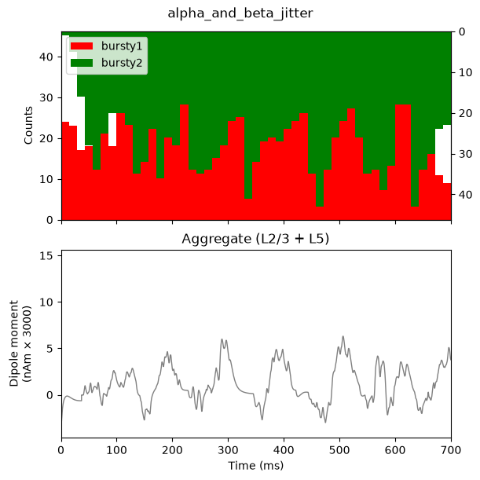
Notice that the input histograms for distal (green) and proximal
(red) input, accumulated across the 3 trials, now show less rhythmicity
due to the jitter in the rhythmic input start times across trials
(tstart_std=50), in addition to jitter from the inherent
burst variance (burst_std=20). This averaged simulation
data exhibits oscillations that appear more continuous than the
single-trial example in Section 6.2 above, and shows relatively more
alpha than beta power: less synchrony between the two drives implies
less chance of the signal going both up and down the dendritessimultaneously.
6.5 Exercises for further exploration
Try decreasing or increasing n_trials in the simulation
above to see how these changes impact the continuity of alpha/beta power
over time.
7. Adjusting Parameters
Parameter adjustments are key to developing and testing hypotheses about the circuit origin of your own low-frequency rhythmic data. Here, we walk through examples of how adjusting the "Rhythmic Proximal/Distal Input" drive parameters impacts the alpha and beta rhythms described above.
In the GUI, each of these adjustments is made by editing a value in
the External drives tab before re-running the simulation.
With the API, we do the equivalent by re-loading the same
AlphaAndBeta.json network used in Section 6, and then
modifying only the drive parameters we care about, in-place, before
simulating. Each example below therefore starts from an identical copy
of the Section 6 network, so that the only difference from
Section 6 is the parameter we deliberately change.
Timing and synchrony parameters of a drive live in its
dynamics dictionary, which we can edit directly, e.g.
net.external_drives['bursty2']['dynamics']['burst_std'] = 10.0.
The postsynaptic conductances (weights_ampa) are stored
differently: they become part of net.connectivity, with one
entry per target cell type and receptor. To change those, we look up the
relevant connections with pick_connection() and set their
weight. Since we do this more than once below, let's wrap it in a small
helper function.
def set_drive_ampa_weight(net, drive_name, weights_ampa):
"""Change the AMPA weights of an already-loaded drive, in-place.
Parameters
----------
net : Network
The network to modify.
drive_name : str
Name of the drive to modify, e.g. 'bursty2'.
weights_ampa : dict
Mapping of target cell type to new AMPA weight, e.g.
``{'L2_pyramidal': 6e-5, 'L5_pyramidal': 6e-5}``.
"""
for target_type, weight in weights_ampa.items():
conn_idxs = pick_connection(net, src_gids=drive_name,
target_gids=target_type, receptor='ampa')
for conn_idx in conn_idxs:
net.connectivity[conn_idx]['nc_dict']['A_weight'] = weight
# Also update the drive's own record of its weights, so that
# printing the drive below reflects the change.
net.external_drives[drive_name]['weights_ampa'][target_type] = weight
7.1 Increasing the strength and synchrony of the distal drive increases beta activity
We saw in Section 6.2 that the relative timing of proximal and distal
inputs determines whether alpha or beta events emerge. Another factor
that increases the prevalence of beta activity is the strengthened
synchrony of the distal drive. Beta activity increases with a stronger,
more synchronous subthreshold distal drive, where the beta frequency is
set by the duration of the driving bursts (~50 ms). The strength is
controlled by the postsynaptic conductance (weights_ampa),
and the synchrony is controlled by burst_std. Here we:
- Decrease
burst_stdof the distal drive from20to10ms. - Increase
weights_ampaof the distal drive to bothL2_pyramidalandL5_pyramidalfrom5.4e-5to6e-5.
Both changes push a greater amount of current flow down the pyramidal neuron dendrites, more synchronously.
# Start from the same network as Section 6 ...
net_incr_beta = read_network_configuration(
local_alpha_network_files_directory / 'AlphaAndBeta.json'
)
# ... then modify only the distal drive ('bursty2'), in-place.
# 1. More synchronous distal bursts: burst_std from 20 to 10 ms.
net_incr_beta.external_drives['bursty2']['dynamics']['burst_std'] = 10.0
# 2. Stronger distal input: weights_ampa onto both pyramidal
# populations from 5.4e-5 to 6e-5.
set_drive_ampa_weight(
net_incr_beta, 'bursty2',
{'L2_pyramidal': 6e-5, 'L5_pyramidal': 6e-5})
# Print the modified distal drive to console, to confirm our changes
net_incr_beta.external_drives['bursty2']
dpl_incr_beta = run_simulation(net_incr_beta)
plot_drive_and_dipole(net_incr_beta, dpl_incr_beta, 'alpha_and_beta_incr_beta')
plot_dipole_and_spectrogram(dpl_incr_beta, 'alpha_and_beta_incr_beta')
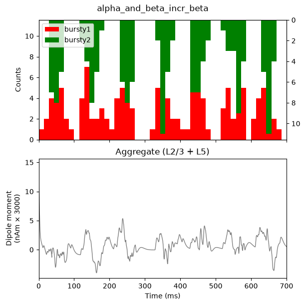
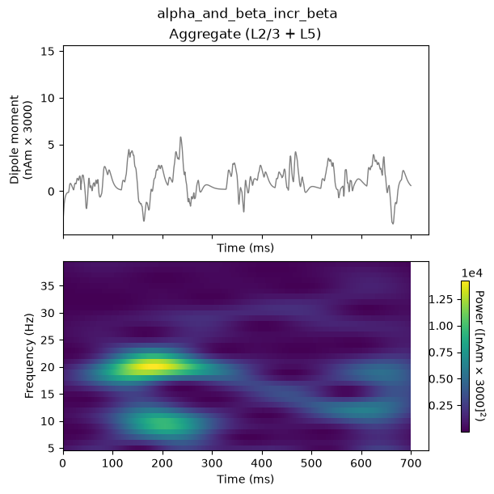
The histogram profile of the distal input bursts (green) is narrower,
corresponding to more synchronous input than in the original
AlphaAndBeta simulation. The waveform also shows a sharper,
downward (negative) deflecting signal due to the stronger distal input.
These sharper deflections lead to increased ~20 Hz beta activity
relative to 10 Hz alpha activity in the spectrogram, compared with
Section 6.2. The 20 Hz frequency is set by the duration of the downwardcurrent flow, here approximately 50 ms.
7.1.1 Exercise for further exploration
Try changing the frequency of the rhythmic distal drive from 10 Hz to
20 Hz by setting burst_rate. Try other frequencies for the
proximal and distal rhythmic drives. How do the rhythms change? See how
further changes in burst_std affect the rhythms
expressed.
7.2 Increasing the delay between proximal and distal inputs creates continuous alpha oscillations without beta activity
In addition to drive strength and synchrony, the relative
timing between proximal and distal inputs is an important
factor in determining the relative alpha and beta expression in the
model. Here we demonstrate that out-of-phase 10 Hz burst inputs can
produce continuous alpha activity without any beta events, by
increasing the proximal drive's tstart from 50
to 100 ms. Since the distal input still starts at
tstart=50 ms, the two drives will now arrive to the
network, on average, a half-cycle out of phase (i.e., in antiphase,
every 50 ms).
# Start from the same network as Section 6 ...
net_alpha_only = read_network_configuration(
local_alpha_network_files_directory / 'AlphaAndBeta.json'
)
# ... then delay the proximal drive ('bursty1') only: tstart from 50 to
# 100 ms, so that it arrives a half-cycle after the distal drive
# ('bursty2'), which still starts at tstart=50 ms.
net_alpha_only.external_drives['bursty1']['dynamics']['tstart'] = 100.0
# Print the drives to console, to confirm our change
net_alpha_only.external_drives
dpl_alpha_only = run_simulation(net_alpha_only)
plot_drive_and_dipole(net_alpha_only, dpl_alpha_only, 'alpha_only')
plot_dipole_and_spectrogram(dpl_alpha_only, 'alpha_only')
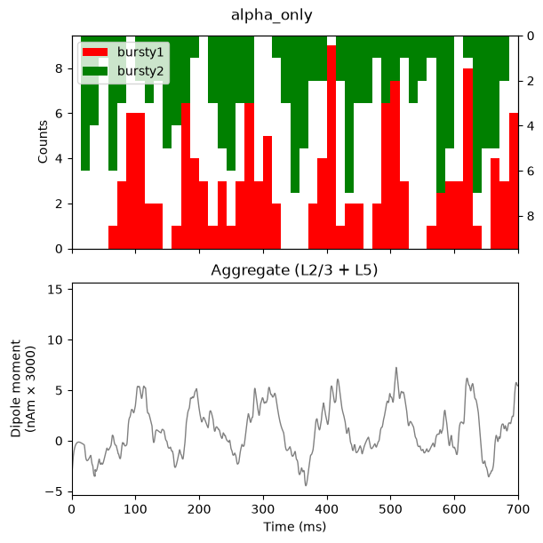
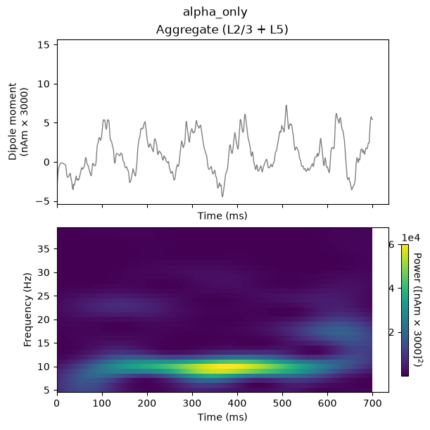
The histogram profile of the proximal (red) and distal (green) input bursts are generally half a cycle out-of-phase (antiphase). This alternation of proximal, followed by distal, drive induces alternating subthreshold current flow up and down the pyramidal neuron dendrites, creating a continuous alpha oscillation in the current dipole waveform that oscillates around 0 nAm. The corresponding spectrogram shows continuous, nearly-pure alpha activity, in contrast to the intermittent alpha and beta seen in Section 6.2. This type of strong alpha activity is similar to what might be observed over occipital cortex duringeyes-closed conditions.
7.2.1 Exercise for further exploration
Try changing the delay between the proximal and distal drives by
varying amounts (i.e., other values of tstart). What
happens to the rhythm expressed? Can you create a simulation where other
frequencies are expressed? How is it created? Are the cells spiking or
subthreshold?
7.3 Increasing the strength of the distal drive further creates high-frequency responses due to induced spiking activity
In all simulations so far, the strength of the rhythmic proximal and distal inputs was chosen so that the simulated cells remained subthreshold (no spiking). We now demonstrate what happens when the distal drive strength is increased far enough to induce spikes. Instead of subthreshold alpha/beta events, the dipole signal becomes dominated by higher-frequency events created by spiking activity. This type of activity is not typically observed in MEG or EEG data, supporting the notion that alpha/beta rhythms are created through subthreshold processes.
We increase weights_ampa of the distal drive to both
L2_pyramidal and L5_pyramidal from
5.4e-5 to 4e-4 (note the change in the
exponent!), and widen the spectrogram frequency range from 5-40 Hz to
5-120 Hz (c.f. GUI's Max Spectral Frequency (Hz) change
from 40 to 120).
# Start from the same network as Section 6 ...
net_high_freq = read_network_configuration(
local_alpha_network_files_directory / 'AlphaAndBeta.json'
)
# ... then greatly increase the strength of the distal drive
# ('bursty2') only: weights_ampa onto both pyramidal populations from
# 5.4e-5 to 4e-4 (note the change in the exponent!).
set_drive_ampa_weight(
net_high_freq, 'bursty2',
{'L2_pyramidal': 4e-4, 'L5_pyramidal': 4e-4})
dpl_high_freq = run_simulation(net_high_freq)
# Widen the spectrogram range from 5-40 Hz to 5-120 Hz, equivalent to
# the GUI's `Max Spectral Frequency (Hz)` change from 40 to 120.
freqs_wide = np.arange(5., 120., 1.)
plot_drive_and_dipole(net_high_freq, dpl_high_freq, 'high_freq_spiking')
plot_dipole_and_spectrogram(dpl_high_freq, 'high_freq_spiking',
freqs=freqs_wide)
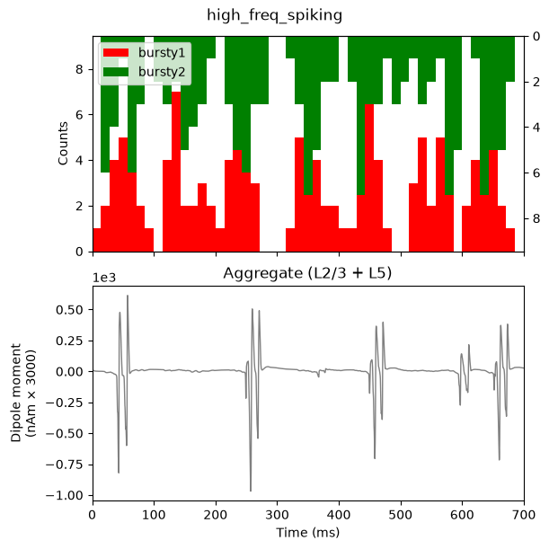
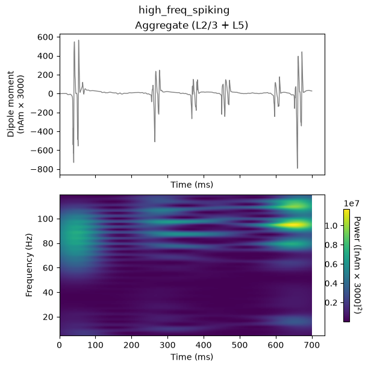
Because we greatly increased the postsynaptic conductance of the
distal driving spikes, the distal input now induces spiking activity in
the pyramidal neurons on several cycles of the drive, resulting in a
sharp, rapidly oscillating dipole waveform, and broadband ~60-120 Hz
activity in the spectrogram. Next, we verify that the neurons are indeed
spiking by overlaying the spiking rastergram on top of each layer's
contribution to the dipole signal, using
plot_spikes_raster(..., overlay_dipoles=True) (c.f. GUI's
Dipole Layers-Spikes (1x1) layout).
net_high_freq.cell_response.plot_spikes_raster(
dpl=dpl_high_freq, overlay_dipoles=True, show=False)
plt.show()
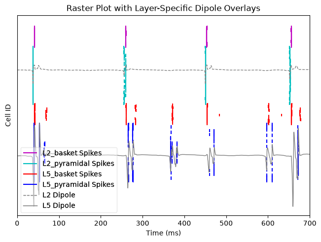
The grey lines correspond to each layer's contribution to the dipole signal seen above, while the other colors represent spikes of each cell population. Highly synchronous neuronal spiking in each population coincides with the high-frequency events seen in the dipole signal. These high-frequency waveforms are induced by the pyramidal neurons spiking, which create rapid, back-propagating action potentials andrepolarization of the dendrites.
7.3.1 Exercise for further exploration
View the contribution of Layer 2/3 and Layer 5 separately to the net
current dipole waveform (layer='L2' and
layer='L5' in plot_dipole()
/ plot_tfr_morlet()) and compare with the spiking activity
in each population. How does each layer contribute? Try changing the
proximal input parameters instead of the distal input
parameters – can you elicit high-frequency spiking using proximal input
changes only? Finally, try adjusting one of the parameters regulating
the local network connections (e.g. via net.connectivity,
not covered in this tutorial). What happens?
References
Hughes, Stuart W., and Vincenzo Crunelli. 2005. “Thalamic Mechanisms of EEG Alpha Rhythms and Their Pathological Implications.” The Neuroscientist 11 (4): 357–72. https://doi.org/10.1177/1073858405277450.
Jones, Edward G. 2001. “The Thalamic Matrix and Thalamocortical Synchrony.” Trends in Neurosciences 24 (10): 595–601. https://doi.org/10.1016/S0166-2236(00)01922-6.
Jones, Stephanie R. 2016. “When Brain Rhythms Aren’t ‘Rhythmic’: Implication for Their Mechanisms and Meaning.” Current Opinion in Neurobiology, Systems neuroscience, 40 (October): 72–80. https://doi.org/10.1016/j.conb.2016.06.010.
Jones, Stephanie R., Dominique L. Pritchett, Michael A. Sikora, Steven M. Stufflebeam, Matti Hämäläinen, and Christopher I. Moore. 2009. “Quantitative Analysis and Biophysically Realistic Neural Modeling of the MEG Mu Rhythm: Rhythmogenesis and Modulation of Sensory-Evoked Responses.” Journal of Neurophysiology 102 (6): 3554–72. https://doi.org/10.1152/jn.00535.2009.
Sherman, Maxwell A., Shane Lee, Robert Law, Saskia Haegens, Catherine A. Thorn, Matti S. Hämäläinen, Christopher I. Moore, and Stephanie R. Jones. 2016. “Neural Mechanisms of Transient Neocortical Beta Rhythms: Converging Evidence from Humans, Computational Modeling, Monkeys, and Mice.” Proceedings of the National Academy of Sciences 113 (33): E4885–94. https://doi.org/10.1073/pnas.1604135113.
Zhu, Zhao, Johanna M. Zumer, Marianne E. Lowenthal, Jeff Padberg, Gregg H. Recanzone, Leah A. Krubitzer, Srikantan S. Nagarajan, and Elizabeth A. Disbrow. 2009. “The Relationship Between Magnetic and Electrophysiological Responses to Complex Tactile Stimuli.” BMC Neuroscience 10 (1): 4. https://doi.org/10.1186/1471-2202-10-4.
Ziegler, David A., Dominique L. Pritchett, Paymon Hosseini-Varnamkhasti, Suzanne Corkin, Matti Hämäläinen, Christopher I. Moore, and Stephanie R. Jones. 2010. “Transformations in Oscillatory Activity and Evoked Responses in Primary Somatosensory Cortex in Middle Age: A Combined Computational Neural Modeling and MEG Study.” NeuroImage 52 (3): 897–912. https://doi.org/10.1016/j.neuroimage.2010.02.004.